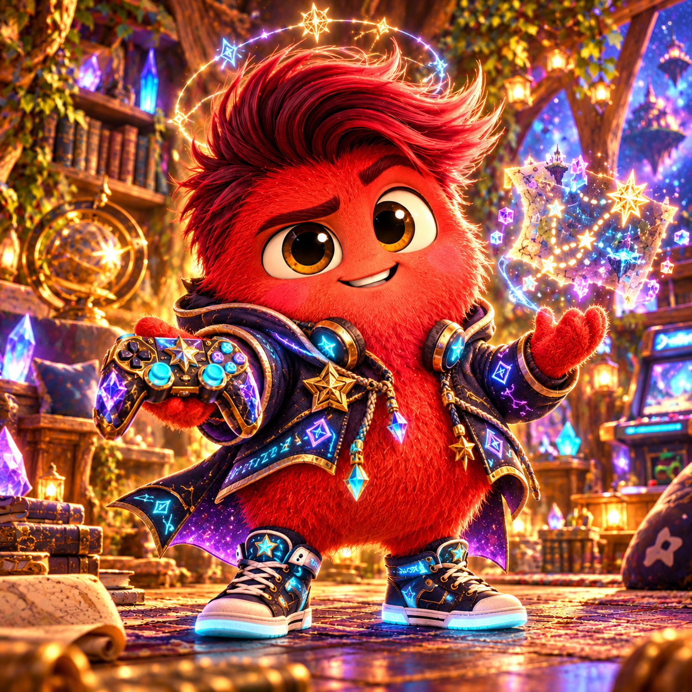
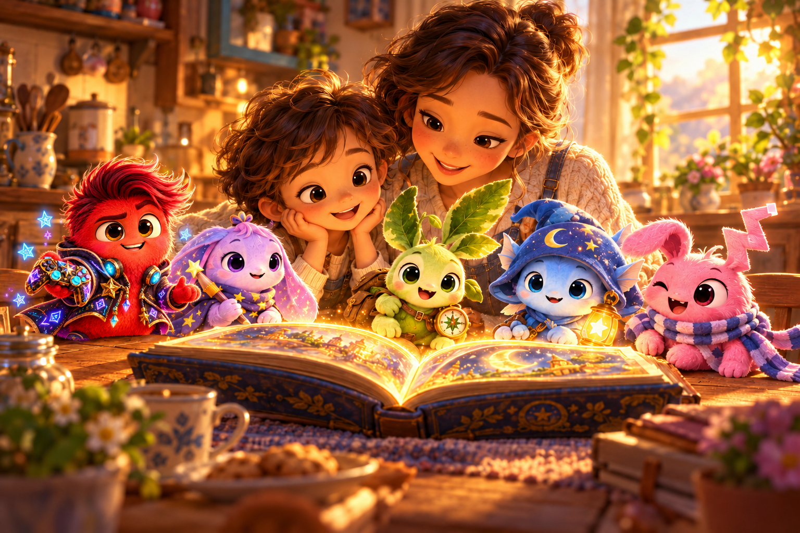

✦ Their own way in
Count stars with Lumo, invent with Moki, or follow Nori’s quiet questions. Branching choices, optional hints, and explanations give children room to explore.
FOR THE GROWN-UPS RAISING BIG IMAGINATIONS
What if screen time gave you something to talk about at dinner? Meet five delightfully imperfect companions who turn questions into adventures—and adventures into things to try together.
Try the free browser app ↗No sign-up. No payment. Five authored adventures ready to explore.

Curiosity over competition. Creativity over consumption. A little more together.
Count stars with Lumo, invent with Moki, or follow Nori’s quiet questions. Branching choices, optional hints, and explanations give children room to explore.
Trade story sentences. Spot patterns. Build a paper bridge. Each adventure offers a small invitation to carry curiosity into everyday life.
No streak pressure, paid rewards, or friendship penalties. Reading controls, calm mode, and gentle break reminders make space for family routines.

THE HEARTLIGHT FAMILY INVITATION
Start with one five-minute adventure. Ask “What surprised you?” Take the next idea to the kitchen table. That’s a Lummings afternoon.
Find your first adventure ↗Explore the parent controlsA suggested starting point is ages 6–9, with a grown-up available. Choose activities based on your child’s interests and reading comfort. These activities are not a formal learning assessment.
This browser app uses authored stories and branching choices. It does not send conversations to an AI model. The wider project has experimental AI code; that is not part of this family experience.
Play temporarily, or enable saving in the parent dashboard. Saved profiles, progress, and notebook stories stay in this browser’s local storage. You can export or erase them. There is no account or cross-device sync. Local data is not encrypted; anyone using this browser may access it. Hosting may independently log requests.
This browser experience is free to try. There is no checkout, subscription, or in-app purchase in this version.
Absolutely. Share this page’s address with a grown-up. Your family’s locally saved profiles and stories are not part of that link.
“They came for a little friend. We stayed for the what-ifs.”
Campaign line, not a customer testimonial. Artwork is illustrative. No educational outcome claims are made.